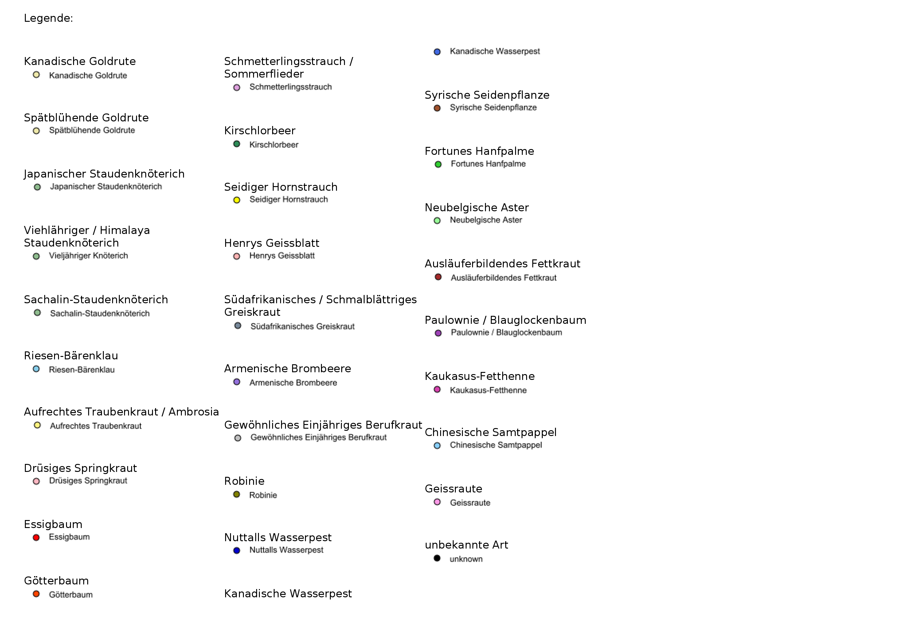

MapFish Print 3
Maps, Templates and PDF
Marion Baumgartner
About Camptocamp


Printing Maps
- An essential requirement in web mapping solutions
- A list of requirements to fulfill:
- resolution
- Format A4, A3, A0, ...
- Templates and layouts
- different geo-data
- ...
CSS Stylesheets
Javascript base in OLv6
WKHTMLTOPDF
Map Fish Print
- Java Library & Web application
- Creation of a PDF with map components



Architecture

The Process


Configuration: config.yaml
throwErrorOnExtraParameters: true
transparentTileErrorColor: "rgba(78, 78, 255, 125)"
opaqueTileErrorColor: "rgba(255, 155, 155, 0)"
templates:
A4 portrait: !template
reportTemplate: report.jrxml
attributes:
title: !string
default: "Countries"
map: !map
maxDpi: 400
width: 780
height: 330
processors:
- !reportBuilder
directory: '.'
- !createMap {}
Configuration: report.jrxml


The Process
JSON Request
{
"layout": "A4 portrait",
"outputFormat": "pdf",
"attributes": {
"map": {
"longitudeFirst": true,
"center": [5, 45],
"scale": 100000000,
"projection": "EPSG:4326",
"dpi": 72,
"rotation": 0,
"layers": [{
"type": "geojson",
"geoJson": "file://countries.geojson",
"style": {
"version": "2",
"*": {
"symbolizers": [{
"type": "polygon",
"fillColor": "#5E7F99",
"fillOpacity": 1,
"strokeColor": "#CC1D18",
"strokeOpacity": 1,
"strokeWidth": 1
}]
}
}
}]
}
}
}
The Process
Setting it all together in a Web-Application


Using the application in a ready Docker image
- clone the repo:
$ git clone git@github.com:marionb/mfp_examples.git - to get started - in the cloned folder run:
$ make serve
Creating the PDF
- Using a Browser: http://localhost:8680/
-
Using a bash command:
$ curl -XPOST -d @requestData.json \ -H " Content-Type: application/json" \ http://localhost:8680/print/default/buildreport.pdf \ -o ExpectedResult.pdf
More Options
Attribute Tables
Data-sources
(e.g. arbitrary number of maps in a report)

Charts

External data-sources (databases)

Client side support

Plugable Architecture

MapFish Print 3
Some Links